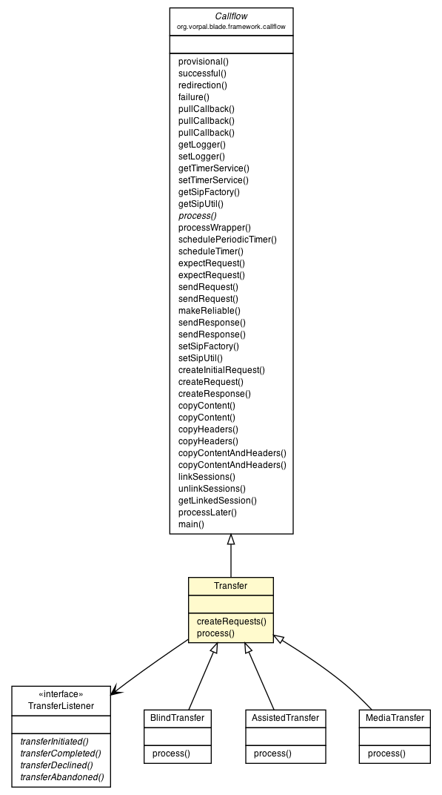

org.vorpal.blade.framework.callflow.Callflow
org.vorpal.blade.framework.transfer.Transfer
org.vorpal.blade.framework.callflow.Callflow
org.vorpal.blade.framework.transfer.Transfer
|
||||||||||
| PREV CLASS NEXT CLASS | FRAMES NO FRAMES | |||||||||
| SUMMARY: NESTED | FIELD | CONSTR | METHOD | DETAIL: FIELD | CONSTR | METHOD | |||||||||

java.lang.Object
public class Transfer
| Field Summary | |
|---|---|
protected static java.lang.String |
ACTIVE
|
protected static java.lang.String |
EVENT
|
protected static java.lang.String |
OK_200
|
protected static java.lang.String |
PENDING
|
protected static java.lang.String |
REFER_TO
|
protected static java.lang.String |
REFERRED_BY
|
protected static java.lang.String |
SIPFRAG
|
protected static java.lang.String |
SUBSCRIPTION_STATE
|
protected javax.servlet.sip.SipServletRequest |
targetRequest
|
protected javax.servlet.sip.SipServletRequest |
transfereeRequest
|
protected TransferListener |
transferListener
|
protected javax.servlet.sip.SipServletRequest |
transferorRequest
|
protected static java.lang.String |
TRYING_100
|
| Fields inherited from class org.vorpal.blade.framework.callflow.Callflow |
|---|
ACK, BYE, CANCEL, Contact, INFO, INVITE, NOTIFY, OPTIONS, PRACK, PUBLISH, REFER, REGISTER, RELIABLE, SIP, sipFactory, sipLogger, sipUtil, SUBSCRIBE, timerService, UPDATE |
| Constructor Summary | |
|---|---|
Transfer(TransferListener transferListener)
This is a generic base class to be extended by other classes to create a complete transfer callflow. |
|
| Method Summary | |
|---|---|
protected void |
createRequests(javax.servlet.sip.SipServletRequest request)
Call this method to construct the various request objects. |
void |
process(javax.servlet.sip.SipServletRequest request)
|
| Methods inherited from class org.vorpal.blade.framework.callflow.Callflow |
|---|
copyContent, copyContent, copyContentAndHeaders, copyContentAndHeaders, copyHeaders, copyHeaders, createInitialRequest, createRequest, createResponse, expectRequest, expectRequest, failure, getLinkedSession, getLogger, getSipFactory, getSipUtil, getTimerService, linkSessions, main, makeReliable, processLater, processWrapper, provisional, pullCallback, pullCallback, pullCallback, redirection, schedulePeriodicTimer, scheduleTimer, sendRequest, sendRequest, sendResponse, sendResponse, setLogger, setSipFactory, setSipUtil, setTimerService, successful, unlinkSessions |
| Methods inherited from class java.lang.Object |
|---|
clone, equals, finalize, getClass, hashCode, notify, notifyAll, toString, wait, wait, wait |
| Field Detail |
|---|
protected static final java.lang.String REFER_TO
protected static final java.lang.String REFERRED_BY
protected static final java.lang.String SUBSCRIPTION_STATE
protected static final java.lang.String EVENT
protected static final java.lang.String ACTIVE
protected static final java.lang.String PENDING
protected static final java.lang.String SIPFRAG
protected static final java.lang.String TRYING_100
protected static final java.lang.String OK_200
protected TransferListener transferListener
protected javax.servlet.sip.SipServletRequest transfereeRequest
protected javax.servlet.sip.SipServletRequest targetRequest
protected javax.servlet.sip.SipServletRequest transferorRequest
| Constructor Detail |
|---|
public Transfer(TransferListener transferListener)
transferListener - | Method Detail |
|---|
protected void createRequests(javax.servlet.sip.SipServletRequest request)
throws javax.servlet.ServletException,
java.io.IOException
request -
javax.servlet.ServletException
java.io.IOException
public void process(javax.servlet.sip.SipServletRequest request)
throws javax.servlet.ServletException,
java.io.IOException
process in class org.vorpal.blade.framework.callflow.Callflowjavax.servlet.ServletException
java.io.IOException
|
||||||||||
| PREV CLASS NEXT CLASS | FRAMES NO FRAMES | |||||||||
| SUMMARY: NESTED | FIELD | CONSTR | METHOD | DETAIL: FIELD | CONSTR | METHOD | |||||||||